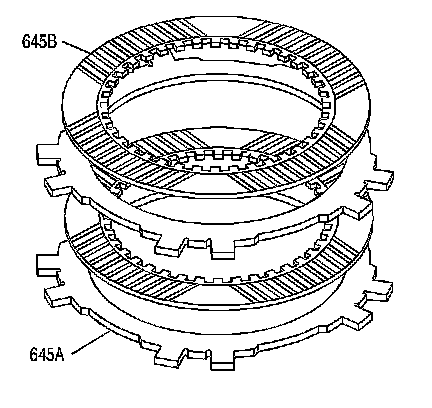
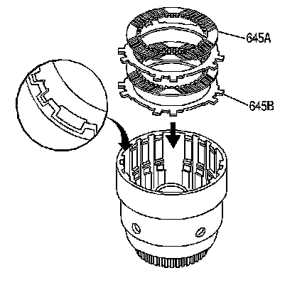

Overrun Clutch Installation
Overrun Clutch Installation

1. Inspect the fiber plate assemblies (645B) and the steel plates (645A) for the following defects:
^ Damaged tangs
^ Delamination
^ Excessive wear
^ Wear or heat damage

2. Install the overrun clutch plates into the input housing starting with a steel plate (645B) and alternating with fiber plate assemblies (645A).
3. Index the plates in the input housing with the wide notches remaining open.

4. Install the input sun gear bearing assembly (637) into the input housing.